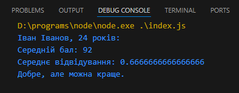

Клас "Калькулятор"
Створіть клас Calculator, який буде мати методи для виконання базових математичних операцій: додавання, віднімання, множення та ділення.
Скрипт:
class Calculator {
add(a, b) {
return a + b;
}
subtract(a, b) {
return a - b;
}
multiply(a, b) {
return a * b;
}
divide(a, b) {
if (b === 0) {
return "Помилка: ділення на нуль!";
}
return a / b;
}
}
const calc = new Calculator();
console.log(calc.add(5, 3)); // 8
console.log(calc.subtract(10, 4)); // 6
console.log(calc.multiply(3, 6)); // 18
console.log(calc.divide(8, 2)); // 4
console.log(calc.divide(8, 0)); // Помилка: ділення на нуль!
Результат:

Посилання на репозиторій github.com
Посилання на гілку на github.com